에너지관리산업기사 (2017-09-23 기출문제)
1과목: 열역학 및 연소관리
1. 압축비가 5, 차단비가 1.6, 비열비가 1.4인 가솔린 기관의 이론열효율은?
- 34.6%
- 37.9%
- 47.5%
- 53.9%
(정답률: 54%)

2. 공기압축기가 100kPa, 20, 0.8m 인 1kg의 공기를 1MPa 까지 가역 등온과정으로 압축할 때 압축기의 소요일(kJ)은?
- 184
- 232
- 287
- 324
(정답률: 32%)
3. 보일러의 안전장치 중 보일러 내부 증기 압력이 스프링 조정압력보다 높을 경우 내부의 벨로즈가 신축하여 수은 등 스위치를 작동하게 하여 전자밸브로 하여금 자동으로 연료 공급을 중단하게 함으로써 압력초과로 인한 보일러 파열사고를 방지해 주는 안전장치는?
- 안전밸브
- 압력제한기
- 방폭문
- 가용전
(정답률: 73%)
4. 열역학 제2법칙에 관한 설명으로 틀린 것은?
- 과정의 방향성을 제시한 비가역 법칙이다.
- 엔트로피 증가 법칙을 의미한다.
- 열은 고온으로부터 저온으로 자동적으로 이동한다.
- 열이 주위와 계에 아무런 변화를 주지 않고 운동 에너지로 변화할 수 있다.
(정답률: 75%)
5. 연소안전장치 중 화염이 발광체임을 이용하여 화염을 검출하는 것으로, 광전관, PbS 셀(cell), CdS 셀 등을 사용하는 것은?
- 플레임 아이
- 플레임 로드
- 스택 스위치
- 연료차단 밸브
(정답률: 83%)
6. 탄소 1kg을 연소시키기 위해서 필요한 이론적인 산소량은?
- 1 Nm3
- 1.867 Nm3
- 2.667 Nm3
- 22.4 Nm3
(정답률: 69%)
7. 대기압에서 물의 증발잠열은 약 얼마인가?
- 334 kJ/kg
- 539 kJ/kg
- 1000 kJ/kg
- 2264 kJ/kg
(정답률: 65%)
8. 기체연료의 연소방식 중 예혼합연소방식의 특징에 대한 설명으로 틀린 것은?
- 화염이 짧다.
- 부하에 따른 조작범위가 좁다.
- 역화의 위험성이 매우 작다
- 내부 혼합형이다.
(정답률: 73%)
9. 프로판 가스(LPG)에 대한 설명으로 틀린 것은?
- 황분이 적고 유독성분 함량이 많다.
- 질식의 우려가 있다.
- 가스 비중이 공기보다 크다.
- 누설 시 인화 폭발성이 있다.
(정답률: 79%)
10. 공기보다 비중이 커서 누설이 되면 낮은 곳에 고여 인화폭발이 원인이 되는 가스는?
- 수소
- 메탄
- 일산화탄소
- 프로판
(정답률: 86%)
11. 어느 열기관이 외부로부터 Q의 열을 받아서 외부에 100kJ의 일을 하고 내부 에너지가 200kJ 증가하였다면 받은 열(Q)는 얼마인가?
- 100 kJ
- 200 kJ
- 300 kJ
- 400 kJ
(정답률: 78%)
12. 25℃의 철(Fe) 35kg을 온도 76℃로 올리는데 소요열량이 675kcal이다. 이 철의 비열(a)과 열용량(b)은?
- a : 0.38 kcal/kgㆍ℃, b : 13.2 kcal/℃
- a : 2.64 kcal/kgㆍ℃, b : 9.25 kcal/℃
- a : 0.38 kcal/kgㆍ℃, b : 9.25 kcal/℃
- a : 0.26 kcal/kgㆍ℃, b : 13.2 kcal/℃
(정답률: 59%)
13. 1kg의 공기가 일정온도 200℃에서 팽창하여 처음 체적의 6배가 되었다. 전달된 열량(kJ)은? (단, 공기의 기체상수는 0.287 k/kgㆍK 이다.)
- 243
- 321
- 413
- 582
(정답률: 43%)
14. 연도가스 분석에서 CO가 전혀 검출되지 않았고, 산소와 질소가 각각 (O)Nm3/kg 연료, (N2)Nm3/kg 연료일 때 공기비(과잉공기율)는 어떻게 표시되는가?
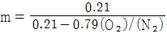
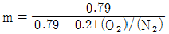
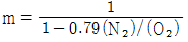
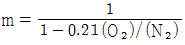
(정답률: 58%)
15. 탄화도를 기준으로 석탄을 분류할 때 탄화도 증가에 따라 석탄의 일반적인 성질 변화로 옳은 것은?
- 휘발성이 증가한다.
- 고정탄소량이 감소한다.
- 수분이 감소한다.
- 착화 온도가 낮아진다.
(정답률: 66%)
16. 습증기 영역에서 건도에 관한 설명으로 틀린 것은?
- 건도가 1에 가까워질수록 건포화증기 상태에 가깝다.
- 건도가 0에 가까워질수록 포화수 상태에 가깝다.
- 건도가 x일 때 습도는 x-1이다.
- 건도가 1에 가까울수록 갖고 있는 열량이 크다.
(정답률: 82%)
17. 다음 중 건식 집진형식이 아닌 것은?
- 백필터식
- 사이클론식
- 멀티클론식
- 벤튜리스크러버식
(정답률: 75%)
18. 이론 습연소가스량(GOω) 과 이론 건연소가스량(GOd)과의 관계를 옳게 나타낸 것은? (단, 단위는 N3/kg이다.)
- GOω = GOd + (9H + W)
- GOd = GOω + (9H + W)
- GOω = GOd + 1.25(9H + W)
- GOd = GOω + 1.25(9H + W)
(정답률: 76%)
19. 공기 2kg이 압력 400kPa, 온도 10℃인 상태로부터 정압하에서 온도가 200℃로 변화할 때 엔트로피 변화량은? (단, 정압비열은 1.003kJ/kgㆍK, 정적비열은 0.716kJ/kgㆍK 이다.)
- 0.51 kJ/K
- 1.03 kJ/K
- 136.12 kJ/K
- 190.63 kJ/K
(정답률: 54%)
20. 절대온도 1K 만큼의 온도차는 섭씨온도로 몇 ℃의 온도차와 같은가?
- 1 ℃
- 5/9 ℃
- 273 ℃
- 274 ℃
(정답률: 75%)
2과목: 계측 및 에너지진단
21. 다음 상당증발량을 구하는 식에서 i2 가 뜻하는 것은?
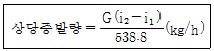
- 증기발생량
- 급수의 엔탈피
- 발생 증기의 엔탈피
- 대기압 하에서 발생하는 포화증기의 엔탈피
(정답률: 74%)
22. 방사율이 0.8, 물체의 표면온도가 300℃, 물체 벽면체 온도가 25℃일 때 공간에 방출하는 단위 면적당 방사에너지는 약 몇 W/m2 인가?
- 2300
- 3780
- 4550
- 5760
(정답률: 47%)
23. 보일러의 자동제어와 관련된 약호가 틀린 것은?
- FWC : 급수제어
- ACC : 자동연소제어
- ABC : 보일러 자동제어
- STC : 증기압력제어
(정답률: 84%)
24. 다음 중 연속동작이 아닌 것은?
- 비례동작
- 미분동작
- 적분동작
- ON-Off동작
(정답률: 89%)
25. 가정용 수도미터에 사용되는 유량계는?
- 플로우 노즐 유량계
- 오벌유량계
- 윌트만 유량계
- 플로트 유량계
(정답률: 77%)
26. 연료가 보유하고 있는 열량으로부터 실제 유효하게 이용된 열량과 각종 손실에 의한 열량 등을 조사하여 열량의 출입을 계산한 것은?
- 열정산
- 보일러효율
- 전열면부하
- 상당증발량
(정답률: 82%)
27. 노내압을 제어하는데 필요하지 않은 조작은?
- 급수량 조작
- 공기량 조작
- 댐퍼의 조작
- 연소가스 배출량 조작
(정답률: 75%)
28. 편위식 액면계는 어떤 원리를 이용한 것인가?
- 아르키메데스의 부력 원리
- 토리첼리의 법칙
- 달톤의 분압법칙
- 도플러의 원리
(정답률: 87%)
29. 다음 중 열량의 단위가 아닌 것은?
- 주울(J)
- 중량 킬로그램미터(gㆍm)
- 왓트시간(Wh)
- 입방미터매초(m3/s)
(정답률: 69%)
30. 각 물리량에 대한 SI 기본단위의 명칭이 아닌 것은?
- 전류 - 암페어(A)
- 온도 - 섭씨(℃)
- 광도 - 칸델라(cd)
- 물질의 양 - 몰(mol)
(정답률: 77%)
31. 저항온도계의 측온 저항체로 쓰이지 않는 것은?
- Fe
- Ni
- Pt
- Cu
(정답률: 74%)
32. 서미스터(Thermistor)에 대한 설명으로 틀린 것은?
- 응답이 빠르다.
- 전기저항체 온도계이다.
- 좁은 장소에서의 온도 측정에 적합하다.
- 충격에 대한 기계적 강도가 양호하고, 흡습등에 열화되지 않는다.
(정답률: 78%)
33. 광전관식 온도계의 특징에 대한 설명으로 옳은 것은?
- 응답속도가 느리다.
- 구조가 다소 복잡하다.
- 기록의 제어가 불가능하다.
- 고정물체의 측정만 가능하다.
(정답률: 71%)
34. 보일러 열정산 시의 측정사항이 아닌 것은?
- 외기온도
- 급수 압력
- 배기가스 온도
- 연료사용량 및 발열량
(정답률: 70%)
35. 다음 단위 중에서 에너지의 차원을 가지고 있는 것은?
- kmㆍm/s2
- kmㆍm2/s2
- kmㆍm2/s3
- kmㆍm2/s
(정답률: 65%)
36. 자유 피스톤식 압력계에서 추와 피스톤의 무게 압이 30kg이고 피스톤 직경이 3 cm일 때 절대압력은 몇 kg/cm2 인가? (단, 대기압은 1kg/cm2 으로 한다.)
- 4.244
- 5.244
- 6.244
- 7.244
(정답률: 55%)
37. 부력과 중력의 평형을 이용하여 액면을 측정하는 것은?
- 초음파식 액면계
- 정전용량식 액면계
- 플로트식 액면계
- 차압식 액면계
(정답률: 81%)
38. 열정산에서 출열 항목에 해당하는 것은?
- 공기의 현열
- 연료의 현열
- 연료의 발열량
- 배기가스의 현열
(정답률: 81%)
39. 다음 중 전기식 제어방식의 특징으로 가장 거리가 먼 것은?
- 고온 다습한 주위환경에 사용하기 용이하다.
- 전송거리가 길고 전송지연이 생기지 않는다.
- 신호처리나 컴퓨터 등과의 접속이 용이하다.
- 배선이 용이하고 복잡한 신호에 적합하다.
(정답률: 84%)
40. 다음 중 물리적 가스분석계가 아닌 것은?
- 전기식 O계
- 연소열식 O2계
- 세라믹식 O2계
- 자기식 O2계
(정답률: 65%)
3과목: 열설비구조 및 시공
41. 패킹 재료 중 합성수지류로서 탄성은 부족하나 약품, 기름에도 침식이 적어 많이 사용되며, 내열성이 양호한 것은?
- 테프론
- 네오프렌
- 콜크
- 우레탄
(정답률: 83%)
42. 과열증기 사용 시 장점에 대한 설명으로 틀린 것은?
- 이론상의 열효율이 좋아진다.
- 고온부식이 발생하지 않는다.
- 증기의 마찰저항이 감소된다.
- 수격작용이 방지된다.
(정답률: 68%)
43. 다음 중 관류식 보일러에 해당되는 것은?
- 슐처 보일러
- 레플러 보일러
- 열매체 보일러
- 슈미드-하트만 보일러
(정답률: 81%)
44. 보온재에서 열전도율이 작아지는 요인이 아닌 것은?
- 기공이 작을수록
- 재질의 밀도가 클수록
- 재질내의 수분이 적을수록
- 재료의 두께가 두꺼울수록
(정답률: 61%)
45. 다음 중 유기질 보온재가 아닌 것은?
- 펠트
- 기포성 수지
- 코르크
- 암면
(정답률: 76%)
46. 원심펌프의 소요동력이 15kW이고, 양수량이 4.5 mm/min일 때, 이 펌프의 전양정은? (단, 펌프의 효율은 70%이며, 유체의 비중량은 1000kg/m3 이다.)
- 10.5 m
- 14.28 m
- 20.4 m
- 28.56 m
(정답률: 51%)
47. 보일러 통풍기의 회전수(N)와 풍량(Q), 풍압(P), 동력(L)에 대한 관계식 중 틀린 것은?
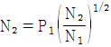
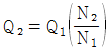
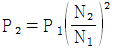
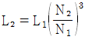
(정답률: 69%)
48. 직경 500mm, 압력 12 g/cm 의 내압을 받는 보일러 강판의 최소두께는 몇 mm로 하여야 하는가? (단, 강판의 인장응력은 30 kg/cm2, 안전율은 4.5이고, 이음효율은 0.58로 가정하며 부식여유는 1mm이다.)
- 8.8 mm
- 7.8 mm
- 7.0 mm
- 6.3 mm
(정답률: 40%)
49. 증기보일러에는 원칙적으로 2개 이상의 안전밸브를 설치하여야 하지만, 1개를 설치할수 있는 최대 전열면적 기준은?
- 10m2 이하
- 30m2 이하
- 50m2 이하
- 100m2 이하
(정답률: 85%)
50. 노통보일러의 특징에 관한 설명으로 틀린 것은?
- 구조가 간단하고 제작이 쉽다.
- 급수처리가 비교적 복잡하다.
- 전열면적이 다른 형식에 비해 적어 효율이 낮다.
- 수부가 커서 부하변동에 영향을 적게 받는다.
(정답률: 56%)
51. 동관의 압축이음 시 동관의 끝을 나팔형으로 만드는데 사용되는 공구는?
- 사이징 툴
- 플레어링 툴
- 튜브 벤더
- 익스펜더
(정답률: 69%)
52. 증기트랩의 구비 조건이 아닌 것은?
- 마찰저항이 적을 것
- 내구력이 있을 것
- 공기를 뺄 수 있는 구조로 할 것
- 보일러 정지와 함께 작동이 멈출 것
(정답률: 83%)
53. 절탄기(economizer)에 관한 설명으로 틀린 것은?
- 보일러 드럼 내의 열응력을 경감시킨다.
- 배기가스의 폐열을 이용하여 연소용 공기를 예열하는 장치이다.
- 보일러의 효율이 증대된다.
- 일반적으로 연도의 입구에 설치된다.
(정답률: 72%)
54. 보온 시공상의 주의사항으로 틀린 것은?
- 보온재와 보온재의 틈새는 되도록 적게 한다.
- 냉 온수 수평배관의 현수밴드는 보온을 내부에서 한다.
- 증기관 등의 벽ㆍ바닥 등을 관통할 때는 벽면에서 25mm 이내는 보온하지 않는다.
- 보온의 끝 단면은 사용하는 보온재 및 보온 목적에 따라 필요한 보호를 한다.
(정답률: 65%)
55. 열전도율 30kcal/mㆍhㆍ℃, 두께 10mm인 강판의 양면 온도차가 2℃ 이다. 이 강판 1m 당 전열량(kcal/h)은?
- 60000
- 15000
- 6000
- 1500
(정답률: 65%)
56. 다음 중 노재가 갖추어야 할 조건이 아닌 것은?
- 사용 온도에서 연화 및 변형이 되지 않을 것
- 팽창 및 수축이 잘 될 것
- 온도급변에 의한 파손이 적을 것
- 사용목적에 따른 열전도율을 가질 것
(정답률: 85%)
57. 보일러 노통 안에 겔로웨이관(galloway tube)을 2~4개 설치하는 이유로 가장 적합한 것은?
- 전열면적을 증대시키기 위함
- 스케일의 부착방지를 위함
- 소형으로 제작하기 위함
- 증기가 새는 것을 방지하기 위함
(정답률: 83%)
58. 섹션이라고 불리는 여러 개의 물집들을 연결하고 하부로 급수하여 상부로 증기 또는 온수를 방출하는 구조로 되어 있으며, 압력에 약해서 0.3MPa 이하에서 주로 사용하는 보일러는?
- 노통연관식 보일러
- 관류 보일러
- 수관식 보일러
- 주철제 보일러
(정답률: 71%)
59. 다음 중 내화 점토질 벽돌에 속하지 않는 것은?
- 납석질 벽돌
- 샤모트질 벽돌
- 고알루미나 벽돌
- 반규석질 벽돌
(정답률: 64%)
60. 글로브 밸브의 디스크 형상 종류에 속하지 않는 것은?
- 스윙형
- 반구형
- 원뿔형
- 반원형
(정답률: 81%)
4과목: 열설비취급 및 안전관리
61. 보일러 급수처리법 중 내처리 방법은?
- 여과법
- 기폭법
- 이온교환법
- 청관제의 사용
(정답률: 68%)
62. 에너지이용 합리화법에 따라 검사에 합격되지 아니 한 검사대상기기를 사용한 자에 대한 벌칙 기준은?
- 2년 이하의 징역 또는 2천만원 이하의 벌금
- 1년 이하의 징역 또는 1천만원 이하의 벌금
- 3천만원 이하의 벌금
- 5백만원 이하의 벌금
(정답률: 83%)
63. 에너지이용 합리화법상 특정열사용기자재 중 요업요로에 해당하는 것은?
- 용선로
- 금속소둔로
- 철금속가열로
- 회전가마
(정답률: 59%)
64. 에너지이용 합리화법에 따라 에너지이용 합리화 기본계획 사항에 포함되지 않는 것은?
- 에너지 소비형 산업구조로의 전환
- 에너지원간 대체(代替)
- 열사용기자재의 안전관리
- 에너지의 합리적인 이용을 통한 온실가스의 배출을 줄이기 위한 대책
(정답률: 73%)
65. 보일러 관수의 분출 작업 목적이 아닌 것은?
- 스케일 부착 방지
- 저수위 운전 방지
- 포밍, 프라이밍 현상을 방지
- 슬러지 취출
(정답률: 73%)
66. 연소 조절 시 주의사항에 관한 설명으로 틀린 것은?
- 보일러를 무리하게 가동하지 않아야 한다.
- 연소량을 급격하게 증감하지 말아야 한다.
- 불필요한 공기의 연소실내 침입을 방지하고, 연소실 내를 저온으로 유지한다.
- 연소량을 증가시킬 경우에는 먼저 통풍량을 증가시킨 후에 연료량을 증가시킨다.
(정답률: 77%)
67. 다음 조건과 같은 사무실의 난방부하(kW)는?
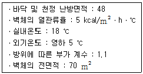
- 24
- 20
- 18
- 13
(정답률: 54%)
68. 에너지이용 합리화법에 따라 특정열사용기자재의 안전관리를 위해 산업통상자원부장관이 실시하는 교육의 대상자가 아닌 자는?
- 에너지관리자
- 시공업의 기술인력
- 검사대상기기 조종자
- 효율관리기자재 제조자
(정답률: 73%)
69. 다음 중 보일러를 점화하기 전에 역화와 폭발을 방지하기 위하여 가장 먼저 취해야 할 조치는?
- 포스트 퍼지를 실시한다.
- 화력의 상승속도를 빠르게 한다.
- 댐퍼를 열고 체류가스를 배출시킨다.
- 연료의 점화가 신속하게 이루어지도록 한다.
(정답률: 82%)
70. 진공환수식 증기 난방법에서 방열기 밸브로 사용하는 것은?
- 콕 밸브
- 팩리스 밸브
- 바이패스 밸브
- 솔레노이드 밸브
(정답률: 64%)
71. 보일러를 2~3개월 이상 장기간 휴지하는 경우 가장 적합한 보존방법은?
- 건식보존법
- 습식보존법
- 단기만수보존법
- 장기만수보존법
(정답률: 83%)
72. 보일러 내의 스케일 발생방지 대책으로 틀린 것은?
- 보일러 수에 약품을 넣어 스케일 성분이 고착되지 않게 한다.
- 기수분리기를 설치하여 경도 성분을 제거한다.
- 보일러수의 농축을 막기 위하여 관수 분출작업을 적절히 한다.
- 급수 중의 염류 등 스케일 생성 성분을 제거한다.
(정답률: 74%)
73. 다음 중 원수로부터 탄산가스나 철, 망간 등을 제거하기 위한 수처리 방식은?
- 탈기법
- 기폭법
- 응집법
- 이온교환법
(정답률: 69%)
74. 에너지이용 합리화법에 따라 에너지다소비사업자가 매년 1월 31일까지 신고해야 할 사항이 아닌 것은?
- 전년도의 수지계산서
- 전년도의 분기별 에너지이용 합리화 실적
- 해당 연도의 분기별 에너지사용 예정량
- 에너지사용기자재의 현황
(정답률: 78%)
75. 다음은 보일러 수압시험 압력에 관한 설명이다. ㉠~㉣에 해당하는 숫자로 알맞은 것은?
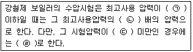
- ㉠ 4.3MPa, ㉡ 1.5, ㉢ 0.2MPa, ㉣ 0.2MPa
- ㉠ 4.3MPa, ㉡ 2, ㉢ 2MPa, ㉣ 2MPa
- ㉠ 0.43MPa, ㉡ 2, ㉢ 0.2MPa, ㉣ 0.2MPa
- ㉠ 0.43MPa, ㉡ 1.5, ㉢ 0.2MPa, ㉣ 2MPa
(정답률: 68%)
76. 주형방열기에 온수를 흐르게 할 경우, 상당방열면적(EDR)당 발생되는 표준방열량(kW/h)은?
- 0.332
- 0.523
- 0.755
- 0.899
(정답률: 64%)
77. 보일러 사용이 끝난 후 다음 사용을 위하여 조치해야 할 주의사항으로 틀린 것은?
- 석탄연료의 경우 재를 꺼내고 청소한다.
- 자동 보일러의 경우 스위치를 전부 정상위치에 둔다.
- 예열용 기름을 노 내에 약간 넣어둔다.
- 유류 사용 보일러의 경우 연료계통의 스톱밸브를 닫고 버너를 청소하고 노 내에 기름이 들어가지 않도록 한다.
(정답률: 82%)
78. 중유를 A급, B급, C급의 3종류로 나뉠 때, 이것을 분류하는 기준은 무엇인가?
- 점도에 따라 분류
- 비중에 따라 분류
- 발열량에 따라 분류
- 황의 함유율에 따라 분류
(정답률: 81%)
79. 보일러 운전 정지 시 주의사항으로 틀린 것은?
- 작업종료 시까지 증기의 필요량을 남긴 채 운전을 정지한다.
- 벽돌 쌓은 부분이 많은 보일러는 압력 상승방지를 위해 급히 증기밸브를 닫는다.
- 보일러의 압력을 급히 내리거나 벽돌 등을 급냉시키지 않는다.
- 보일러 수는 정상수위보다 약간 높게 급수하고, 급수 후 증기밸브를 닫고, 증기관의 드레인 밸브를 열어 놓는다.
(정답률: 76%)
80. 에너지이용 합리화법에 의한 검사대상기기의 개조검사 대상이 아닌 것은?
- 보일러 섹션의 증감에 의하여 용량을 변경하는 경우
- 증기보일러를 온수보일러로 개조하는 경우
- 연료 또는 연소방법을 변경하는 경우
- 보일러의 증설 또는 개체하는 경우
(정답률: 59%)